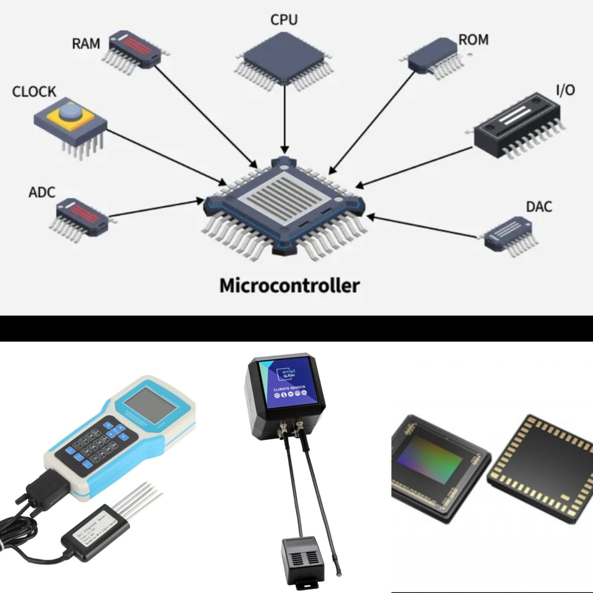
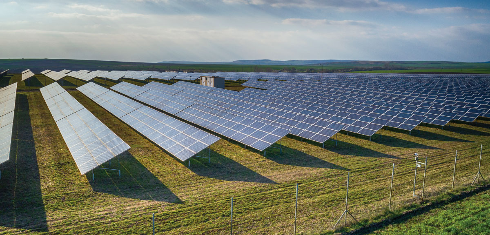
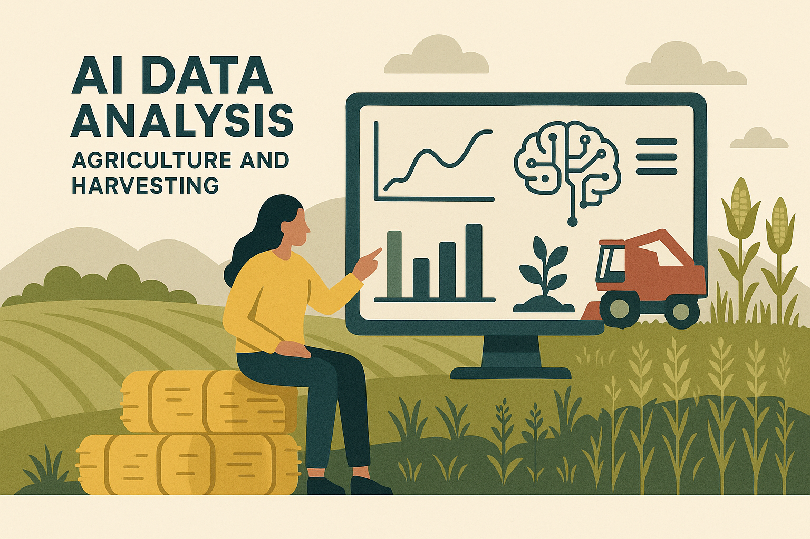
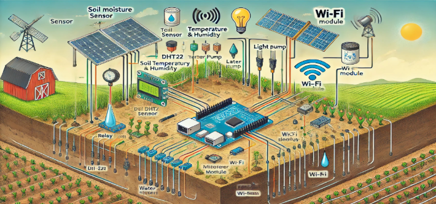
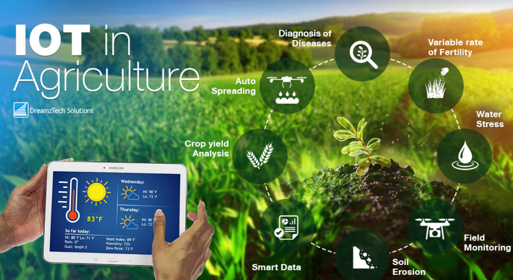
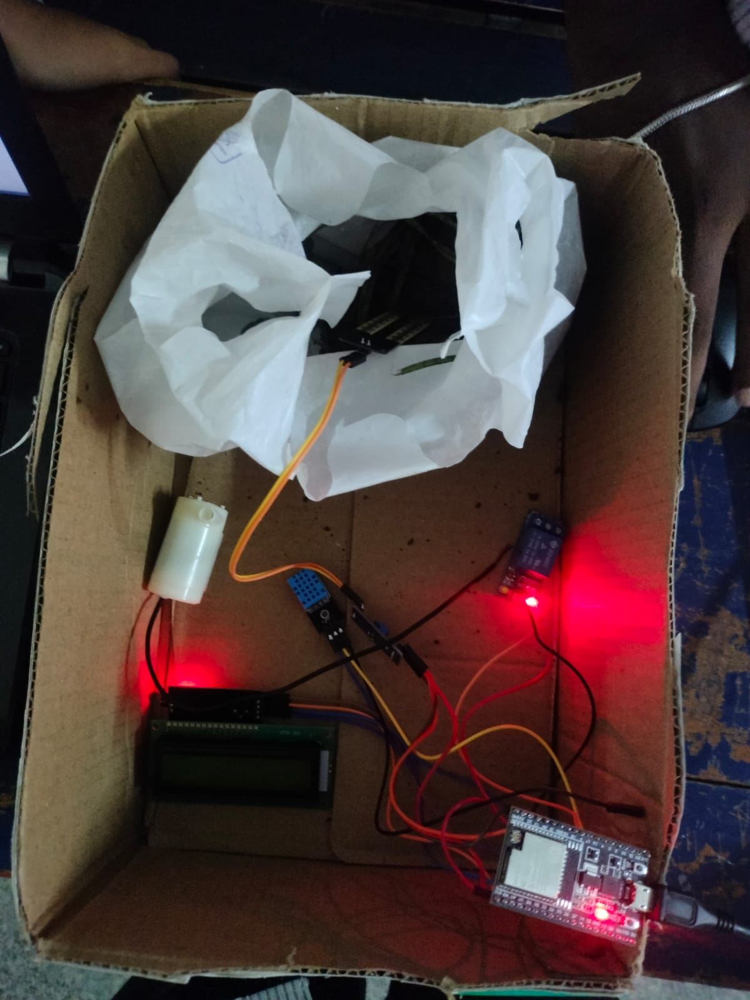
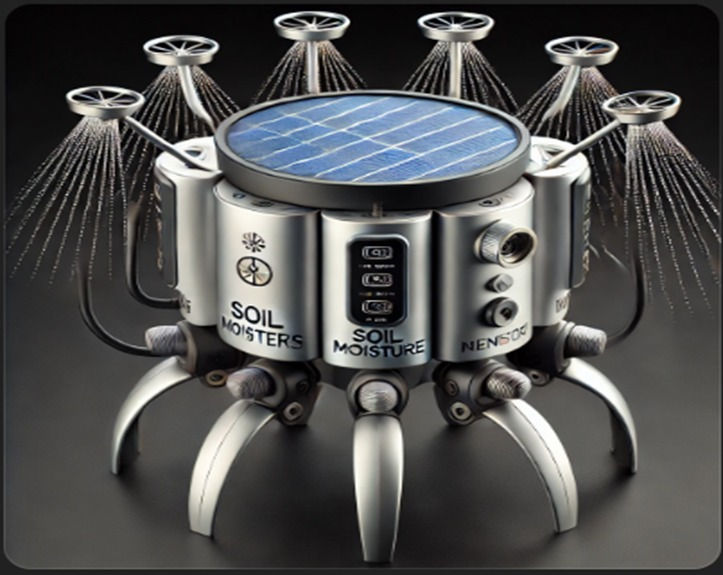

Smarter Farming,
Healthier Harvests.
Our integrated IoT platform brings data-driven precision to your fields, optimizing irrigation for a sustainable and bountiful future.
Our Technology Stack
A More Detailed Explanation
Ideation
We have found mainly 3 problems that have concerned us:
- On dry lands, farmers mistakenly harvest a crop at a wrong time which leads to a wrong crop. This furtherly pushes the farmers into losses and much more poverty , and It also affects agriculture in a certain region badly.
- Insects are mostly attracted to the crops ,These insects damage crops , which again Brings loss to the farmer and affects agricultural practice .
- Due to lack of awareness of crop health and Moisture-levels, farmers are unable to water the crops on time , This furtherly affects crop yielding.
Outcomes
- Timely Crop Harvesting: This will help farmers harvest crops at the optimal time, reducing losses caused by harvesting errors in dry lands.
- Insect Prevention and Crop Protection: By recommending appropriate organic or inorganic pesticides, the device will protect crops from insect damage, improving overall crop health.
- Improved Water Management: Automated watering through soil moisture sensors will ensure that crops receive the right amount of water at the right time.
Local Crop Advisor
Allow access to your location to receive real-time weather data and personalized crop recommendations for your area.
Project in Action






Future Proposed Model

Query Assistant
Meet the Innovators
Farm Data Hub
Upload your agricultural data to gain powerful insights. Our platform makes it simple to store, visualize, and act on your progress.